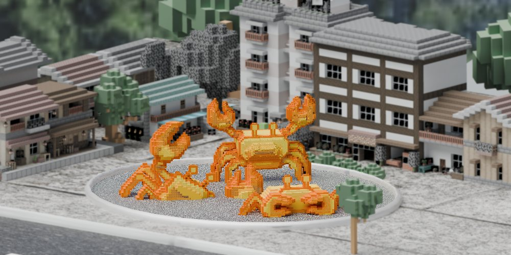
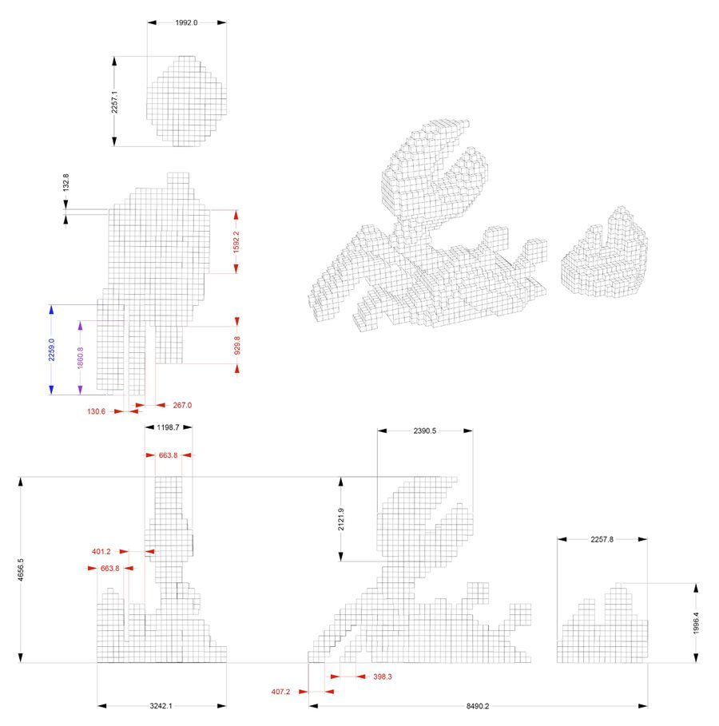

背景
南澳岛云澳镇，位于中国广东省汕头市南澳县东南部，属基岩质大陆岛。 附近海域生物资源丰富，受台湾海峡沿岸流影响，海水交换活跃，浮游植物多，有鱼、虾、蟹、贝、藻类等 1300 多种海洋动植物。
广东省从地理位置上来看与南海相邻，在古代传统的捕鱼业也成为了维持生活的方式之一， 如今部分沿海地区仍然依靠渔业维持生活。
鱼类虽说是在捕捞的品种中最为常见的，也是最具代表性的食物种类， 但我们希望用螃蟹来比拟渔民——在涨潮时螃蟹会像人类一样等待， 在退潮时也会探寻大自然的馈赠。
因此像辛勤的渔民们一样，利用涨潮退潮进行人类活动， 趣味性地将此观念与独特的艺术创作手法相结合，最终构成具有地标性的艺术装置。

立意
三种姿态，对应渔民与海相处的一天：涨潮时等待，退潮时俯身，收工时休憩。
站立的蟹
张开的螯与竖起的身体，像在岸边远望潮水。对应「等待」——渔民最熟悉的状态。
抱沙的蟹
低伏、前倾、螯向内收，像在滩涂上翻找。对应「俯身作业」，身体几乎与地面平行。
躺倒的蟹
侧卧、腿松散，像结束一天的劳作。对应「休憩」，也是整套装置的情绪落点。
选择螃蟹而不是鱼，是因为螃蟹与潮汐的关系是身体性的： 鱼在水里始终游动，人看不见它的「等待」；而螃蟹会停在滩涂上，进退都有明确的姿态。 这种可读性，是装置能够被理解的前提。
形态上没有做写实复刻，而是抽取了「壳」「螯」「腿」三组形体关系： 壳体圆浑、螯部展开、腿部细长且分节。这样既保留了辨识度， 也让装置在尺度放大后仍然稳定、不易产生恐怖感。
制作
从建模到三视图，全部按可以交底的标准做：每一组姿态都出正视、俯视、侧视，并标注毫米级尺寸。


工具链
用 Blender 完成主体建模、材质与灯光渲染；用 Minecraft 做体块推敲， 快速验证装置在真实尺度下与建筑、广场的关系，避免只在小屏幕上「好看」。
场景合成
当前效果图的场景为当地实景，把装置按真实比例置于原场地， 用来判断尺度感、遮挡关系与人流路径——这是提案阶段最重要的一步。

结果
三组姿态体系
站立、抱沙、躺倒，对应渔民与潮汐的一日节奏
可交底的三视图
正视／俯视／侧视 + 毫米级尺寸标注
收录于个人作品集
《Personal Portfolio 2024》第 22—29 页